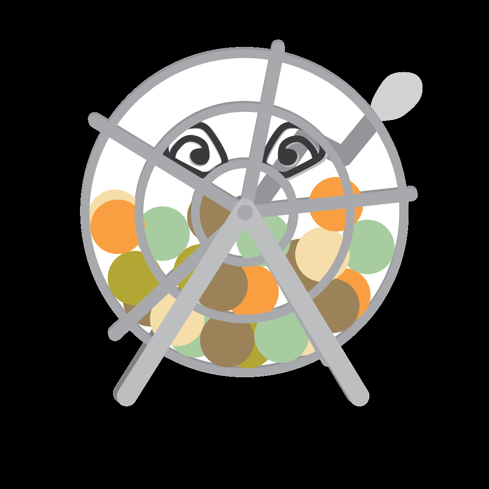
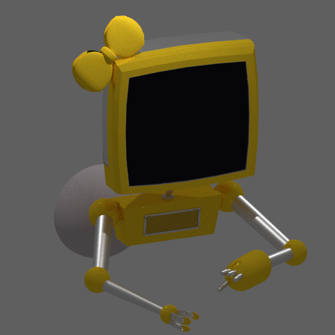
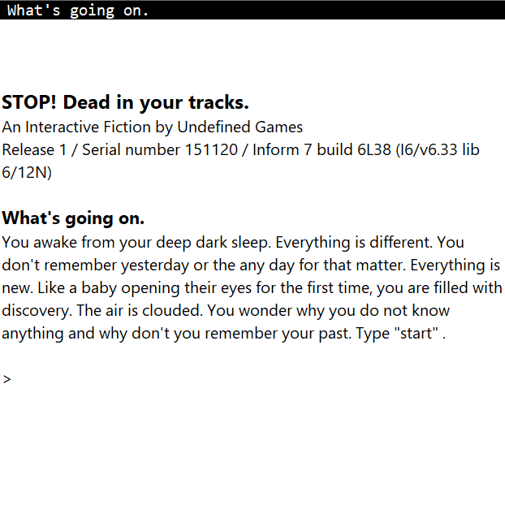
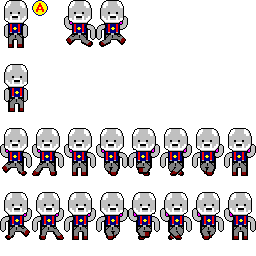

Video Game Development
|
VG Dev is a club in the Georgia Tech Collge of Computing. Each semester teams develope a demo a handful of entirely student created games, everything from the coding and art to level design, music, and story creation. |
|
I have been a part of VG Dev since freshman year and have worked on a number of games, including: Card Ninjas, Edge of Infinity, Stroll Through Slipspace, Hellion Hills Retirement Home, Space Haulers, Yeggquest, and most recently Nova Quest. All of these games can be found on the VG Dev website. |
|
I also enjoy creating games outside of VG Dev using a variety of programs, such as Unity or Gamemaker. I also worked on a text based game, much like Zork, with a group. The game is titled Stop Dead in Your Tracks and was coded using Inform. You can play it by downloading this file. |
|
Programming games for the Game Boy is a particular challege that was tackled in CS 2261, Media Device Architecture. It was a fun challenge working with a very specific piece of hardware. There is less space on a game boy than on a computer, and for art there are far fewer pixels to work with. In coding all the way down to turning on and off single pixels and getting button inputs we were able to learn about how these sort of devices worked, on top of learning more about good game design. |
|
To run any of the gameboy games you'll need to download
visual boy advance, run it, and then open the .gba file. |

CLick Here for Card Ninjas: Title Art and Card Art
For Edge of Infinity I worked on UI: Pause Screen, Level Select,
Tutorial, and an animated title screen.

I also worked on quite a bit of background art for Edge of Infinity.

In Stroll Through Slipspace I mainly focused on pixel art objects.

On Hellion Hills I produced a lot of concept
art as well as one of the main enemies and the title art.
In both Space Haulers and Yeggquest I
dove into 3D modeling, producing characters for each game.
This is the lightbulb co-pilot for Space Haulers.

On top of working on level design I
created this robotic NPC character for Yeggquest.

Here's what Stop Dead in Your Tracks
looks like when run.

Sprite sheets for gameboy games have to be
a very specific size in order to fit in the gameboy memory,
therefore I got to get creative with my pixel art.
|
{kind=link}